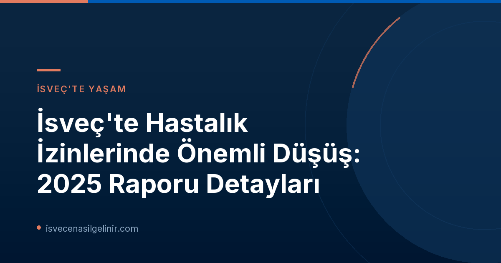

Genel Durum: İsveç'te Hastalık İzinlerinde Düşüş Trendi
Försäkringskassan'ın en güncel raporu, İsveç işgücünde hastalık izinlerinin genel olarak azaldığını ortaya koyuyor. Bu eğilim, ekonomik koşullar ve halk sağlığı önlemleri gibi çeşitli faktörlerin birleşimiyle açıklanabilir. Düşüş, İsveç ekonomisi ve çalışan refahı açısından olumlu bir işaret olarak değerlendiriliyor.
Kapsamlı Bir Azalma: Tüm Sektörlerde İyileşme
Hastalık izinlerindeki azalma sadece belirli alanlarla sınırlı kalmayıp, İsveç ekonomisinin tüm ana sektörlerini ve hem kamu hem de özel sektörleri kapsıyor. Bu durum, iyileşmenin geniş tabanlı olduğunu ve farklı iş alanlarında benzer olumlu gelişmelerin yaşandığını gösteriyor. Yeni hastalık vakası sayısı, 1.000 çalışan başına 86 vakaya düşerek toplamda %5'lik bir azalma kaydetti. Ayrıca, hastalık ödeneği günleri de çalışan başına 9,1 güne inerek %3'lük bir düşüş gösterdi.
| Gösterge | 2025 Yılında Değişim | Güncel Değer (2025) |
|---|---|---|
| 14 Günden Uzun Süren Yeni Hastalık Vakaları | %5 Azalma | 1.000 çalışan başına 86 vaka |
| Hastalık Ödeneği Günleri | %3 Azalma | Çalışan başına 9,1 gün |
| Psikiyatrik Tanılı Yeni Hastalık Vakaları | %12 Azalma | - |
| Yaralanmalara Bağlı Hastalık Vakaları | %2 Azalma | - |
| Kas-İskelet Sistemi Tanılı Hastalık Vakaları | %0,5 Azalma | - |
| Diğer Tanılı Hastalık Vakaları | %3 Azalma | - |
Uzman Görüşleri ve Nedenler
Ulrik Lidwall'ın Analizi
Försäkringskassan analisti Ulrik Lidwall'a göre, hastalık izinlerindeki bu düşüşün uzun vadeli bir trendin başlangıcı olup olmadığını söylemek için henüz erken. Lidwall, toplumdaki hastalık izinlerinin birçok faktöre bağlı olarak sürekli değişkenlik gösterdiğini belirtiyor. Geçmiş verilere göre, birkaç yıllık artışın ardından genellikle bir düşüş eğilimi gözlemleniyor. Ayrıca, yüksek işsizlikle seyreden ekonomik durgunluk dönemlerinin de hastalık izinlerini azaltabileceği biliniyor.
Sektörel Farklılıklar: En Yüksek ve En Düşük Oranlar
Rapora göre, sağlık, bakım ve sosyal hizmetler gibi belediye ve bölge bünyesindeki sektörler, analiz edilen tüm alanlar arasında en yüksek hastalık izin oranına sahip olmaya devam ediyor. Bu sektörlerdeki yeni hastalık vakaları, genel iş hayatına göre %56 daha yüksek ve hastalık süreleri de daha uzun. Lidwall, bu durumun, savunmasız veya yardıma muhtaç kişilerle yakın temas gerektiren birçok mesleği içermesi, yüksek iş yükü, zorlu organizasyonel ve sosyal çalışma ortamları ile fiziksel olarak yorucu iş koşulları gibi bilinen zorluklarla bağlantılı olduğunu vurguluyor.
Sektörel Hastalık İzinleri İstatistikleri
- En Yüksek Hastalık İzni: Sağlık, Bakım ve Sosyal Hizmetler
- Bu Sektörlerde Yeni Vaka Artışı: Genel iş hayatına göre %56 daha yüksek
- Temel Nedenler: Yüksek iş yükü, zorlu çalışma ortamı, fiziksel yorgunluk
Tanı Gruplarına Göre Değişimler
Psikiyatrik Tanılar ve Diğer Hastalık Grupları
Uzun süreli hastalık izinlerinin en yaygın nedeni hala psikiyatrik tanılar. Ancak 2025 yılında bu alanda önemli bir iyileşme kaydedildi; psikiyatrik tanılara bağlı yeni hastalık vakaları %12 oranında azaldı. Diğer tanı gruplarına bakıldığında ise, yaralanmalara bağlı hastalık vakalarında %2, kas-iskelet sistemi tanılarına bağlı vakalarda %0,5 ve diğer tanılarda %3'lük bir düşüş gözlemlendi. Bu veriler, İsveç'in ruh sağlığı alanındaki farkındalık ve destek çalışmalarının olumlu sonuçlar verdiğini düşündürmektedir. İsveç Vatandaşlık Sınavı ile ilgili merak ettikleriniz için sitemizi ziyaret edebilirsiniz.
Cinsiyet Eşitsizliği Devam Ediyor
Hastalık izinlerindeki genel düşüşe rağmen, kadınlar ve erkekler arasındaki fark hala belirginliğini koruyor. 2025 verilerine göre, kadınlarda 1.000 çalışan başına 113 yeni hastalık vakası görülürken, erkeklerde bu sayı 61 olarak kaydedildi. Bu istatistikler, kadınların iş hayatında erkeklere kıyasla daha yüksek oranda hastalık izni kullandığını gösteriyor ve bu konudaki nedenlerin daha derinlemesine incelenmesi gerektiğini ortaya koyuyor.
Rapor Detayları ve Geleceğe Yönelik Beklentiler
Bu kapsamlı veriler, Försäkringskassan tarafından hazırlanan "Sjukfrånvaro efter bransch, sektor och företagsstorlek (Korta analyser 2026:5)" adlı raporda detaylı olarak yer almaktadır. Rapor, İsveç'teki hastalık izinleri dinamiklerini anlamak ve gelecekteki sağlık ve çalışma politikalarını şekillendirmek için önemli bir kaynak teşkil etmektedir. Gelecekteki trendlerin nasıl şekilleneceğini zaman gösterecek olsa da, 2025 verileri genel bir iyileşme ve bazı alanlarda olumlu gelişmeler olduğunu açıkça ortaya koymaktadır.
Referanslar:
İsveç'te Yaşam ve Çalışma Hayatı Hakkında Daha Fazla Bilgi Edinin
İsveç'e göç etmeyi veya burada vatandaşlık almayı mı düşünüyorsunuz? İsveç'teki sosyal haklar, çalışma koşulları ve vatandaşlık süreçleri hakkında kapsamlı rehberlerimize göz atın.